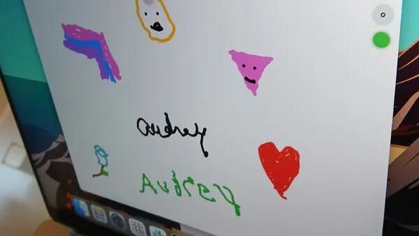

אודרי קרוז כתבה את שמה לראשונה מזה עשרים שנה בלי להזיז אצבע.
פורסם במקור ב LinkedIn
אודרי קרוז כתבה את שמה לראשונה מזה עשרים שנה בלי להזיז אצבע.
אודרי משותקת מגיל 16, והיא האישה הראשונה בעולם שקיבלה את השתל של Neuralink (כן, של איילון מאסק).
מדובר במכשיר בגודל של בערך מטבע של 5 ש״ח, שמושתל ישירות במוח ומתרגם כוונות לפעולות על המסך. בעזרת מבט בלבד על הממשק היא מצליחה להזיז סמן, להקליד ואף לצייר. היא לא מפעילה אף איבר בגוף - הכל רק באמצעות המחשבה.
128 חוטים דקים הוחדרו לקליפת המוח המוטורית במהלך ניתוח שבוצע באוניברסיטת מיאמי. אלגוריתמים של בינה מלאכותית מזהים את האותות החשמליים וממירים אותם לפקודות מחשב.
קרוז משתפת ציורים ודיאלוגים גרפיים עם הקהל שלה, תגובות שמופקות כולן מתוך תודעה בלבד.
הטכנולוגיה לא החזירה לה את יכולת ההליכה או התנועה, היא לא מטפלת בגוף אלא עוקפת אותו. מאפשרת ליצור, לתקשר, להשאיר סימן בעולם - בלי תלות באף שריר או איבר מלבד המח.
מה שבעבר היה פריבילגיה של גוף מתפקד הופך עכשיו לאופציה של תודעה בלבד. והאפשרות הזו לא שייכת רק לאודרי קרוז. דמיינו מה הייתם יכולים לעשות עם יכולת כזאת - הפעלת טכנולוגיה באמצעות כח המחשבה והכוונה בלבד.
